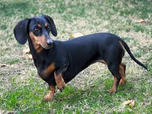
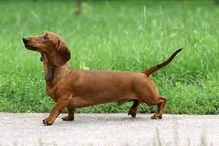
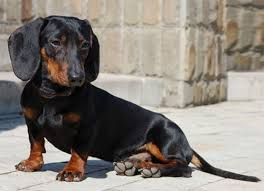

Te sorprenderá saber que hay tres variedades de teckel. Clasificarlos no es del todo fácil, ya que a los tres tipos (tallas) hay que sumarles tres más en función de su pelaje.

Standar - Es el más grande de la raza y su peso comprende entre los 6 y los 9 Kg de peso y su caja torácica ronda los 35 cm.

Miniatura - Más pequeño que el anterior, su peso ronda los 4 Kg de peso y entre 30 y 35 cm de circunferencia torácica.

Kaninchen - El más pequeño de la raza con peso no superior a los 3.5 Kg de peso y hasta 30 cm de circunferencia torácica.